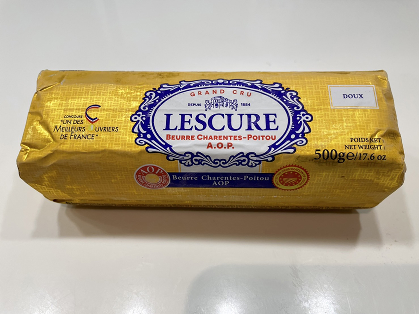
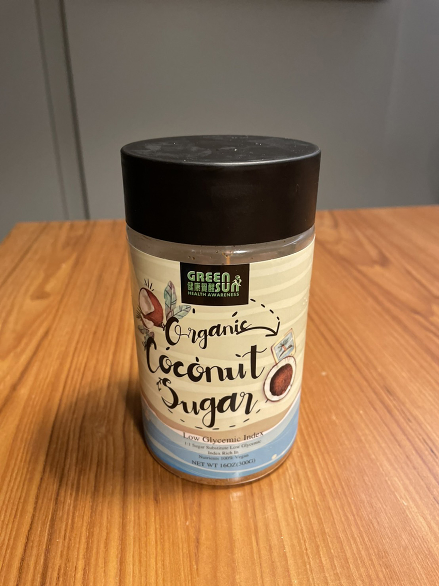
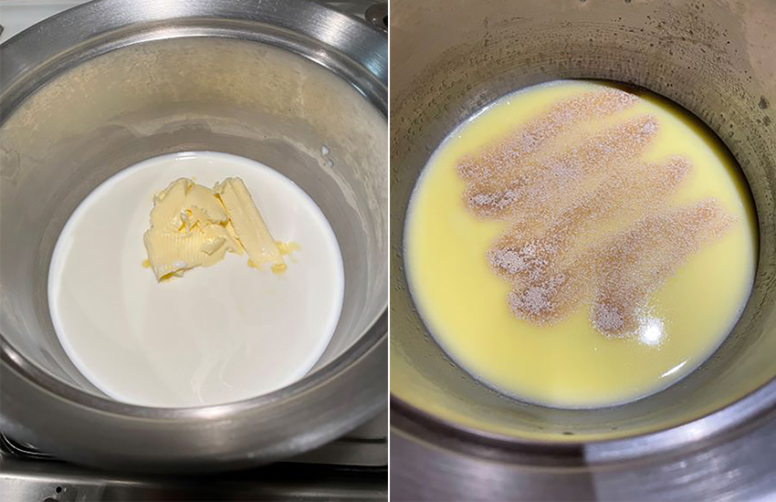
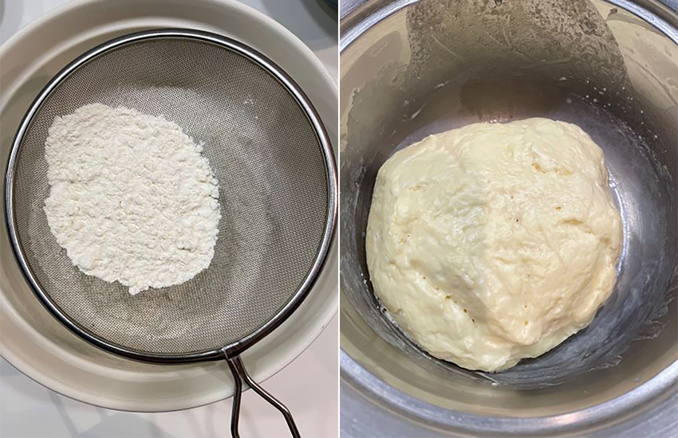
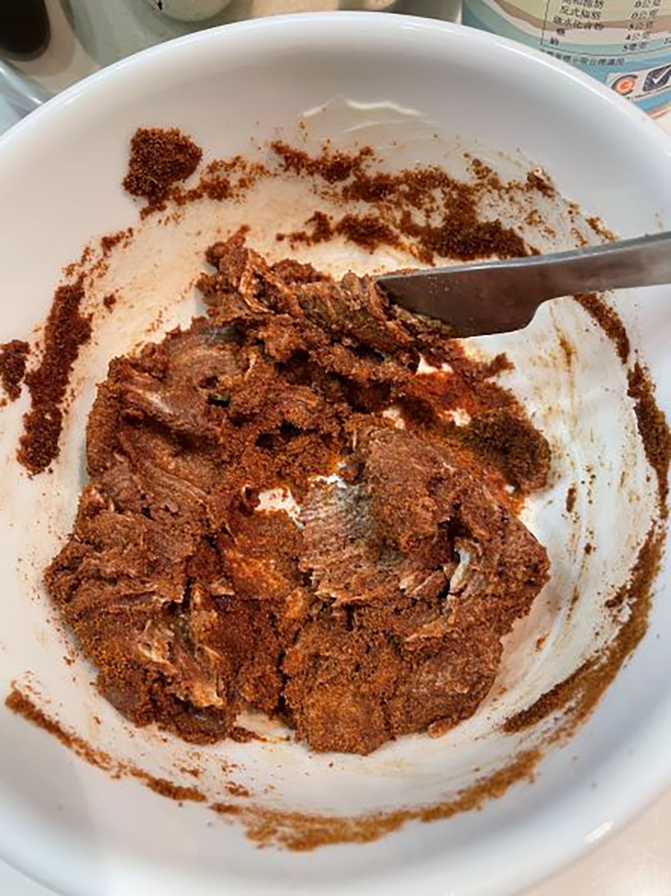
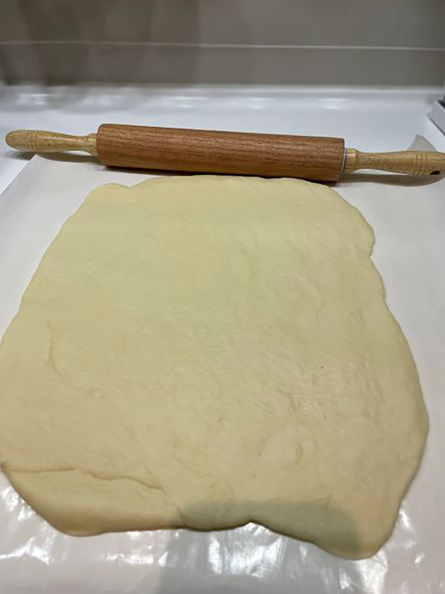
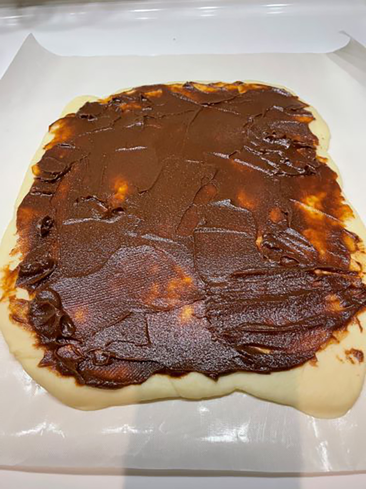
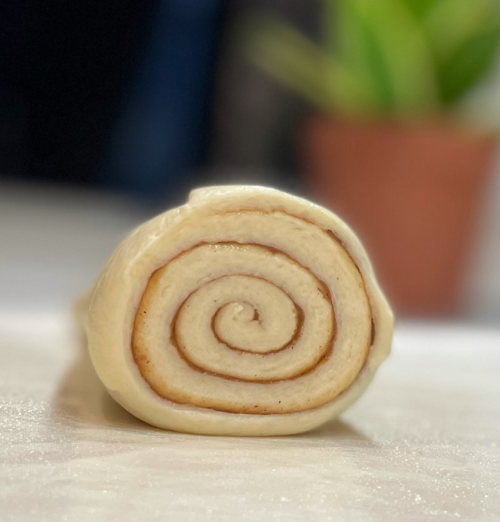
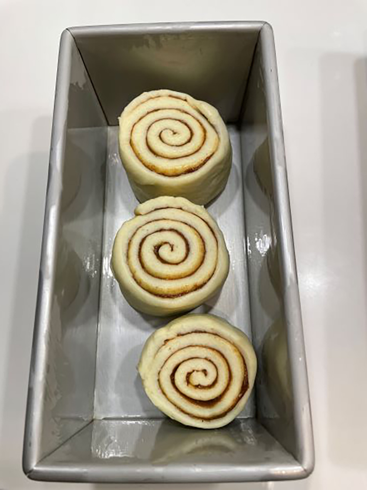
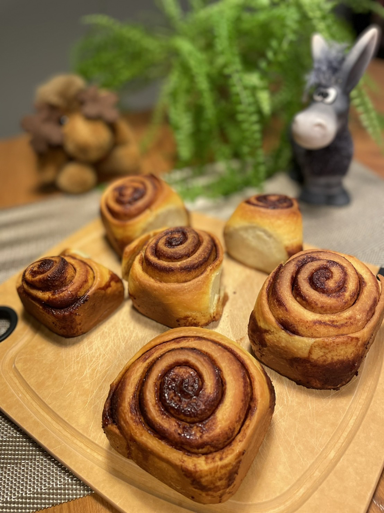

冷冽的空氣、教堂的歌聲、廣場的巨型柏樹宣告著浪漫耶誕的來臨，家裡的廚房時不時飄著烘培的熱氣更能點綴耶誕的溫馨，此時肉桂捲可是不能缺席的甜點主角呢。我一向喜歡肉桂的香氣，但麵包店裡淋上糖霜的肉桂捲卻是直逼邪惡等級的甜膩，那一口咬下的飄然快感，很快轉變成幾百大卡輕鬆下肚不可承受之重，常令人在理智與情感上產生拉鋸。
那要如何兼顧美味、營養與窈窕呢？就自己動手做吧，簡單方便也不需要額外的工具，選對的材料就可以輕鬆又安心享受美食！
先來製作麵糰，需準備的材料有：
中筋麵粉300g
全脂牛奶205g
無鹽奶油52g
細砂糖30g
速發酵母3.1g
鹽 4g
內餡：
黑糖或椰子糖 50g
無鹽奶油78g
肉桂粉 5g
肉桂可以穩定血糖、暖脾胃、殺菌、幫助消化…，是對身體有益的香料。奶油我用的是用歐盟AOP認證的草飼無鹽發酵奶油，選草飼是因為其中的omega 3與共軛亞油酸含量較高，共軛亞油酸可減少人體脂肪囤積、增加肌肉比例。內餡的黑糖我則換成椰子糖，椰子糖是從椰子花汁液萃取出的糖份，是升糖指數最低的糖，其中富含礦物質鉀、磷、鎂、鋅、鐵、鈣、銅…，還有維他命B群及維他命C，有助促進細胞新陳代謝。用椰子糖做出的肉桂捲風味完全不輸黑糖，而且掌握了好油跟好糖，原本的邪惡甜食瞬間升級為天使肉桂捲。
|  |
|  |
步驟：
1. 把奶油、砂糖加入在小鍋中加熱的全脂牛奶，輕攪直到融化。離火後待溫度降至微溫，加入酵母，靜置十分鐘讓酵母菌有足夠時間活化。
|  |
2. 中筋麵粉與鹽過篩，再把步驟1的酵母倒入，攪拌至看不見乾粉即可。
|  |
3. 把麵團蓋上保鮮膜或蓋子，放到溫暖或密閉空間(比如微波爐)發酵2小時。
4. 做內餡：把肉桂粉及黑糖（椰子糖）混合均勻，拌入室溫下軟化的奶油。
|  |
5. 發酵好的麵糰會長大約1倍，揉麵大概揉10分鐘。
6. 擀麵 : 先把麵糰裡的空氣壓出，向四個角落把麵糰擀成約25cm x 35cm的長方形。
|  |
7. 均勻塗上內餡。
|  |
8. 把麵皮捲起成條狀，用牙線由下往上一段段切麵糰，每段約3.5cm。由下往上切麵糰才不會凹陷。
|  |
9. 把切好的麵糰放入烤模中，中間要留一點縫隙，烤模底部輕塗一層油，進行二次發酵，放到溫暖的地方發酵1小時。
|  |
10. 接著就可以放入烤箱，180度烤30分鐘，烤到表層出現淡淡的焦黃色。
|  |
烘烤過程中廚房流溢著奶香與肉桂香，接著穠麗又豐美的香氣便在整個家中流竄。剛出爐的肉桂捲外酥內軟，再配上一壺茶，那甜香的氣息回旋在口中，濃郁且深邃，令人心曠神怡呀！